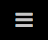
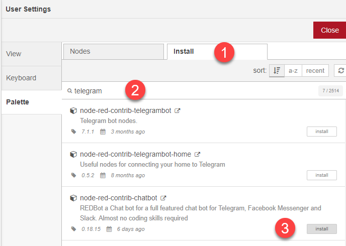
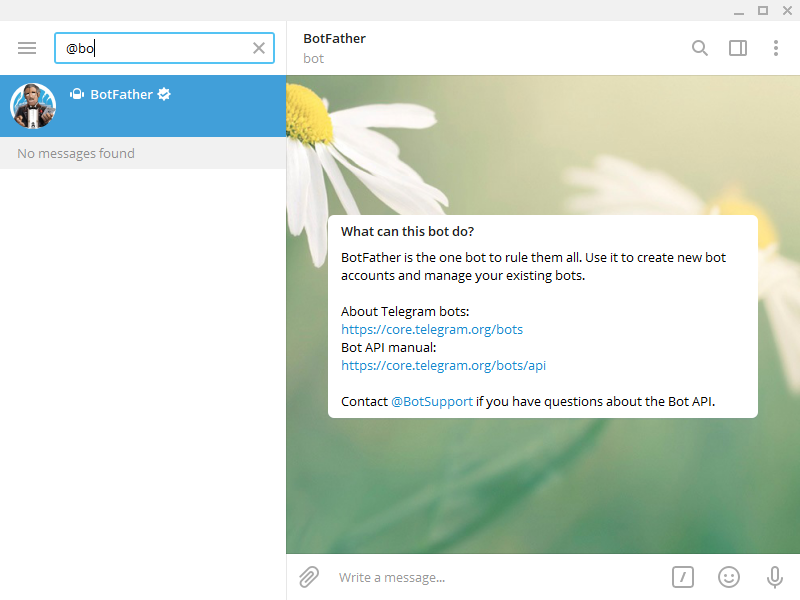
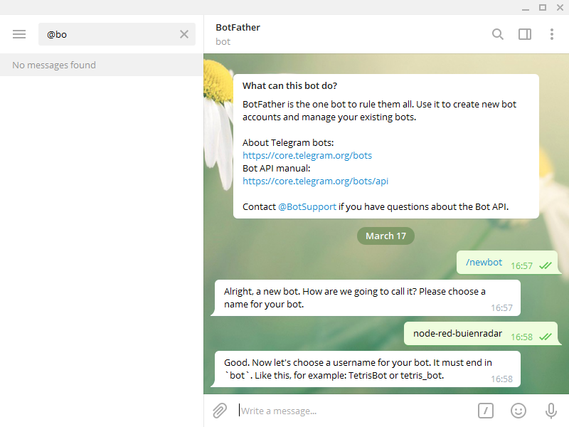
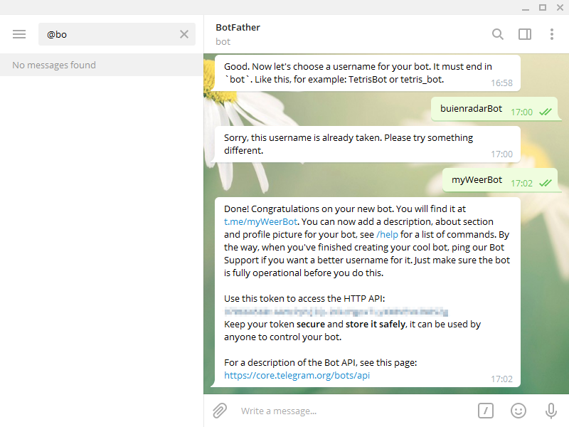

Telegram communicatie
Om met de buiten wereld te communiceren kunnen we onze flow uitberiden met communicatie via Telegram. Met deze applicatie kun je op je desktop, ios of android communiceren met je Node-Red flow.
Installatie telegram
Allereerst moeten we net als in het vorige deel, eerst de blokken toevoegen om met telegram te kunnen communiceren. Ga naar de instellingen ( In de rechter bovenhoek) en open Manage Palette.
Zoek nu naar telegram en installeer node-red-contrib-chatbot

@BotFather
De volgende stap is het creeren van een Telegram bot. Je kunt dit op je telefoon doen, maar nog handiger is om de desktop app te installeren. Hiermee kun je dan straks gemakkelijk de api-key kopieren die je nodig hebt voor de activatie.
Start een nieuwe chat door te zoeken naar @BotFather

Type nu in het berichten veld de tekst /newbot
Bedenk hierna een naam voor je nieuwe bot. Bijvoorbeeld node-red-buienradar.

Hierna vraagt de bot om een gebruikers naam. Deze naam moet uniek zijn, dus het kan zijn dat je enkele varianten moet proberen. Ook moet de naam eindigen op "bot". Dus bijvoorbeeld buienradarBot (maar die was al bezet zoals je kunt zien)

Je krijgt nu ook de API key terug. Bewaar deze goed, aangezien we die nodig hebben voor onze flow.
Een handig commando om de instellingen aan te passen is de volgende:
/mybots Geeft een lijst met opties om ze makkelijk aan te passen. Waaronder het veranderen van de naam en het verwijderen als je klaar bent met deze workshop. In de volgende stap gaan we de bot verbinden met de flow in Node-Red